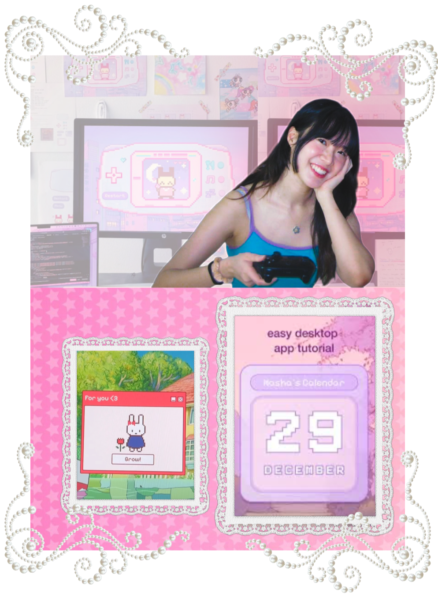

⊹ ࣪ ˖ nasha wanich ⊹ ࣪ ˖

about the artist
Nasha Wanich is a UX engineer, designer, and educator passionate about making technology more creative and accessible. She is the founder of Nashallery, a coding community with over 500,000 followers across social platforms. Through her social media platform, she shares playful projects that inspire girls in STEM and design. She holds a degree in Cognitive Science with a minor in Data Science from Rice University, where she graduated with honors. She currently works @Unleaded as a Design Engineer.
artist projects
Nasha Wanich’s 'Nashallery' is a creative coding gallery of simple software projects with pixel designed assets, showcasing that programming can be accessible and engaging. The projects displayed combines creativity with functionality, such as Study Soda, a game-like study timer, and Egg Timer, a viral desktop widget. Interactive web experiences like the Underwater Photobooth and Dress Up Game blend art with colorful themes and user interaction. Through tutorials on tools like ElectronJS, Nashallery also teaches beginners how to build their own apps, reaching millions and gaining a global, inclusive learning community.